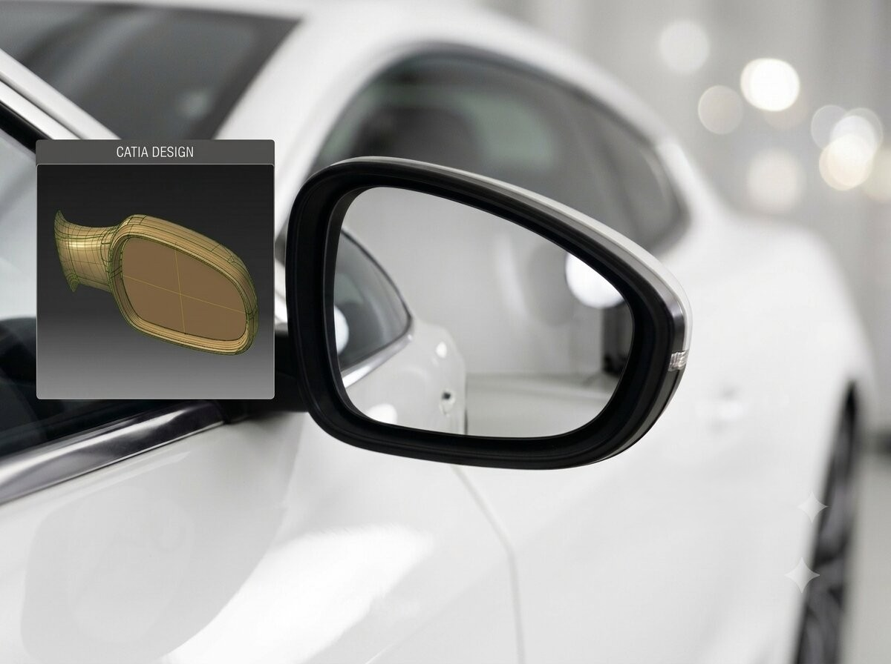
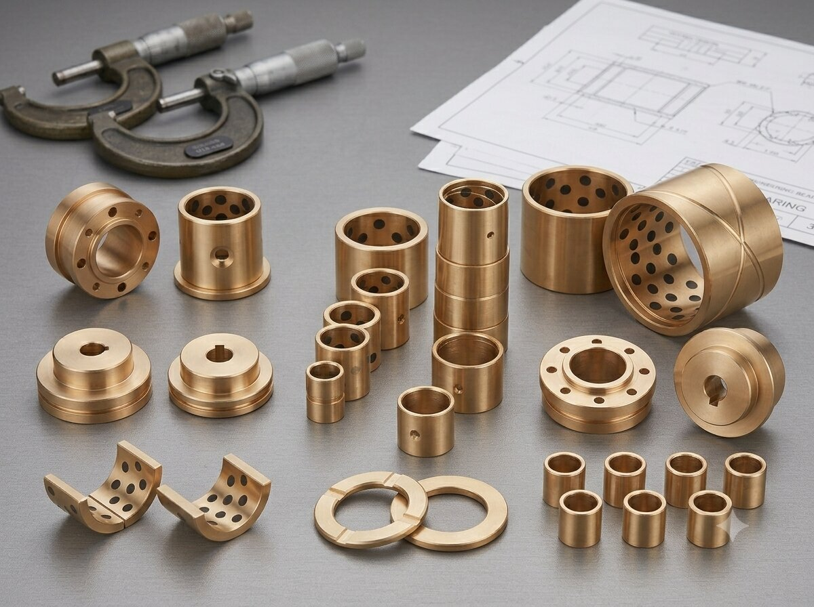
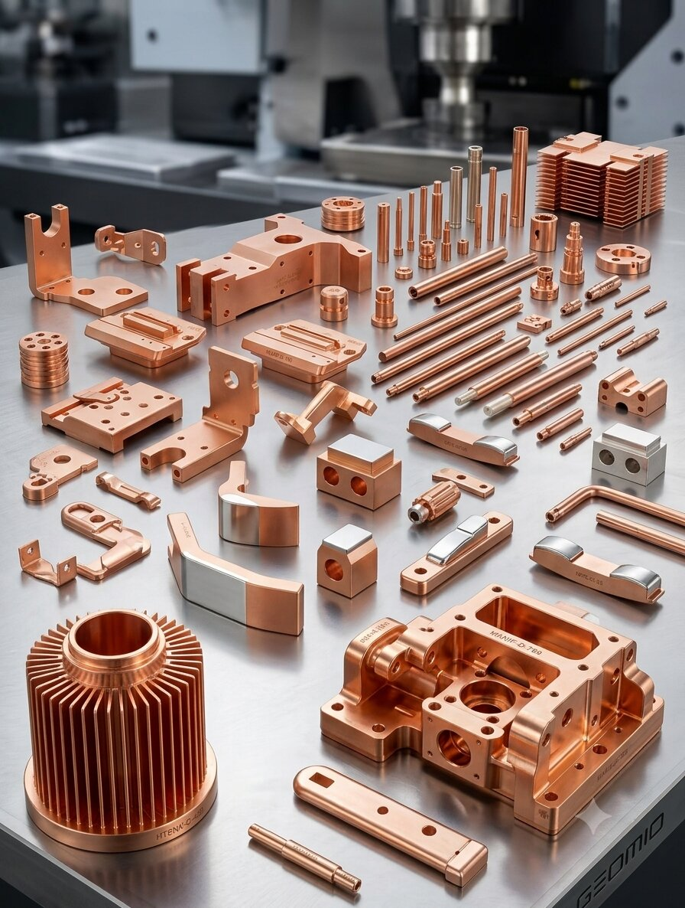

Projects
Automotive Door Mirror Development Using CATIA V5
Role: Design Engineer | Tools: CATIA V5 | Industry: Automotive
Designed and developed a complete automotive door mirror assembly using CATIA V5. Created detailed 3D models, surface models, and assemblies while evaluating manufacturability through draft analysis, wall-thickness optimization, and parting-line definition. Applied DFMA principles to ensure injection moulding feasibility and production readiness.


Plain and Self-Lubricating Bushing Development
Role: NPD Engineer | Tools: SolidWorks | Industry: Industrial Manufacturing
Executed end-to-end product development of plain and self-lubricating bushes. Responsibilities included design, material selection, process planning, plug-layout optimization, dimensional validation, and production support. Successfully ensured manufacturability and compliance with customer specifications.
Metal. Mould. Manufacture. — End-to-End Casting
Role: NPD Engineer | Tools: ADSTEFAN, SolidWorks | Industry: Casting & Foundry
Led the development of copper alloy components for gravity die casting applications as part of the New Product Development (NPD) process. Performed casting simulations using ADSTEFAN to evaluate molten metal flow, solidification behavior, and potential casting defects, enabling virtual validation before tooling manufacture. Optimized gating and riser systems to improve casting quality, yield, and manufacturability while reducing development time and die trial costs. Applied Design for Manufacturing (DFM) principles during product and tooling development, considering casting feasibility and production requirements. Collaborated with foundry, tooling, machining, and quality teams to support process validation, defect reduction, and successful product industrialization.
